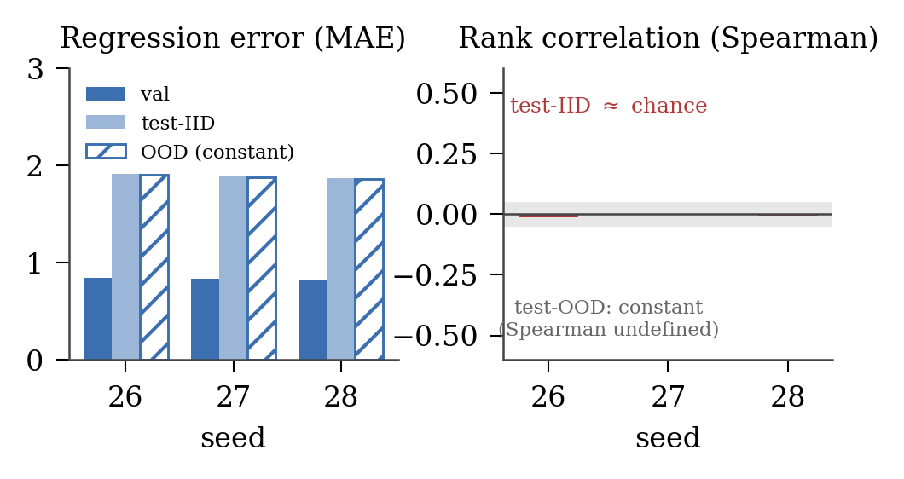

§1Topology instead of vocabulary
Language models read mathematics as a flat token sequence like [sin, (, x, +, 1, )], and must memorize precedence rules and distinct behaviors for dozens of operators. In EML form, any continuous expression becomes a strict binary tree where every internal node is the exact same gate. A graph neural network reading that tree never has to learn what an operator is, only where things connect: purely topological routing, three token types (eml, 1, variables) instead of an open vocabulary. Whether that homogeneity actually helps is the hypothesis, not a result yet.
§2The α threshold, and how far raw EML overshoots it
Let α = |TEML| / |TAST|, the factor by which the tree grows when rewritten in pure EML. Counting representable expressions (Catalan shapes × operator labels × leaf choices) gives a break-even point: the single-operator representation wins only if
α < 1 + log4L(K) ≈ 1.56 (current grammar)
Raw EML misses that by well over an order of magnitude. On the production corpus (250,000 expressions, compiled with the official-v4 EML compiler, no abbreviations, no hidden leaves) the median α is 40.66 and the mean is 952.1, a heavy right tail rather than a typical 952× blow-up. Under the six preregistered per-family thresholds (1.29–1.50), 0 of 250,000 expressions fall below the line. The compression program measures exactly how far that gap narrows; the learning program tests whether what remains is worth it.
| Family | Rows | Median α | Threshold |
|---|---|---|---|
| algebraic core | 70,000 | 25.58 | 1.3010 |
| exp/log | 40,000 | 32.79 | 1.3382 |
| powers/div/rationals | 40,000 | 44.16 | 1.2914 |
| OOD stress | 25,000 | 45.74 | 1.3382 |
| mixed elementary | 35,000 | 133.93 | 1.4292 |
| trig/hyperbolic | 40,000 | 270.46 | 1.5000 |
Per-family median expansion α against its preregistered counting threshold, from the paper (Table 2; Goal 2). Corpus-wide: median 40.66, mean 952.1, p90 385.1, p99 10,448.6; the smallest expansion in the corpus is α = 1.5.
Compression narrows the gap, but never closes it
Three families of compression were run over the same 250k corpus. Each stage is lossless or verifier-gated, and each result traces to an authenticated artifact. The headline: exact sharing shrinks EML dramatically (a 39× mean recovery), and the remaining gap to the source AST is measured exactly.
| Stage | What it does | Production result | Verdict |
|---|---|---|---|
| Raw pure EML-DAG | expand every op into eml | median α 40.66 · mean 952.1 | 0/250k below threshold (Goal 2) |
| EML-DAG (exact sharing) | exact subtree sharing | 39.4× mean EML shrink | lossless control; EML-DAG/AST-tree mean 8.33 (Goal 3) |
| vs source AST | the fairness question | 0 / 250,000 | EML-DAG never beats the AST tree; best remaining ratio 8/7 (Goal 3) |
| E-graph, positive-real | semantic rewrites + extract | 23.9% / 27.6% of costed rows | improves a minority; mean 2.4–2.8% smaller; needs positivity (Goal 4) |
| Frequent motif | dictionary of common subgraphs | strongest simple | the practical lossless channel, reconstruction-verified (Goal 5) |
| Learned motif | scored dictionary | 324.5M vs 317.7M bits | null result: loses to equal-budget frequency, dropped (Goal 5) |
| Neural e-graph ranker | fast candidate scoring | loses to heuristic | null result: a scoring-speed baseline, not a compression win (Goal 5) |
The two preregistered learned-method comparisons (learned-motif selection, neural ranker) are documented in the Goal 5 summary; transparent baselines remain the bar to beat. Every number above is verified against the per-goal summaries in docs/goals/.
Three channels carry forward into every learning experiment
The canonical, assumption-free control. Non-negotiable; every EML claim traces back to it.
The practical channel: the strongest simple lossless compressor, cheap to compute.
The fairness baseline: separates “graph sharing helps” from “EML helps.”
§3The experimental program, one gate per track
Each learning claim GEML intends to make is isolated in its own track, and every track ends at a gate: an explicit, preregistered pass/fail criterion that decides whether the track proceeds, proceeds narrowed, or stops. This is the methodology, not a schedule. Every outcome is recorded against its preregistered criterion, the discipline the structural results above already followed.

-
Goal 6
Equivalence learning grid
Can a GNN learn E₁ ≡ E₂, and under which representation? Trace-rich pair dataset (≥50k pairs with rule provenance), GIN + compute-matched transformer + trivial baseline, 6-arm grid, depth- and family-OOD.
Gate G6. All GNN arms beat the trivial baseline, else stop and fix the dataset; the EML-vs-AST verdict is recorded either way. -
Goal 7
Rewrite-step prediction
From a state graph, predict (rule, application site). The sharpest EML test: does homogeneous topology help rule application transfer across contexts?
Gate G7. Learned policy beats uniform-random valid steps by a wide margin; no dead rules. -
Goal 8
Verified proof-path generation
Best-first search over rewrites with a verifier on every step; value head guides search; simplification mode reuses exact-cost machinery; frontier LLMs run as a reference ceiling through the same verifier.
Gate G8. Guided search beats uniform on nodes-expanded at equal success; zero invalid steps emitted. -
Goal 9
Symbolic regression track
EML’s predicted native home: recover f(x) from samples. EML-space vs AST-space search, against PySR/GP and transformer-SR baselines.
Gate G9. Exact recovery above the GP baseline at matched budget, or a documented negative. -
Goal 10 · gate published
Domain expansion: trig grammar-v2
Scoped to opt-in grammar-v2 compiler conformance only: an explicitly selected surface (asin, acos, atan, π, e) beside the untouched v1 default, audited on exact fingerprints, strict purity, and 100-digit numerics. No corpus rebuild, no α re-measurement, no grid re-runs under this gate.
Gate G10. Final-tier verdict published 2026-07-29 (lead decision): fail. 74 retained rows, zero integrity/coverage/v1-drift failures, and exactly the eight preregistered asin/acos endpoint cells nonfinite in high-precision raw-tree evaluation; scoped to the opt-in v2 surface only. -
Goal 11
Scale-up & final comparison
Corpus at 10–100×, scaling curves per channel, the parameter-efficiency hypothesis tested explicitly, frontier-LLM comparison normalized by the verifier.
Gate G11. Every headline number ships with denominators, multi-seed variance, and scaling caveats resolved or stated. -
Goal 12
Consolidation & release
Findings report (positive or null, equal prominence), one-command reproducibility package, paper under the agreed claim discipline.
Predictions on record
Falsifiable, made before the learning runs, kept here so they can be checked against results, not quietly revised after.
| Task | Prediction (falsifiable) |
|---|---|
| Direct expression evaluation | weak: nested exp/ln trees explode |
| Equivalence classification | decent at depths 1–6, degrading beyond |
| Symbolic regression | strongest track, EML’s native home |
| Proof generation | needs a different architecture for complex proofs; weakest in geometry |